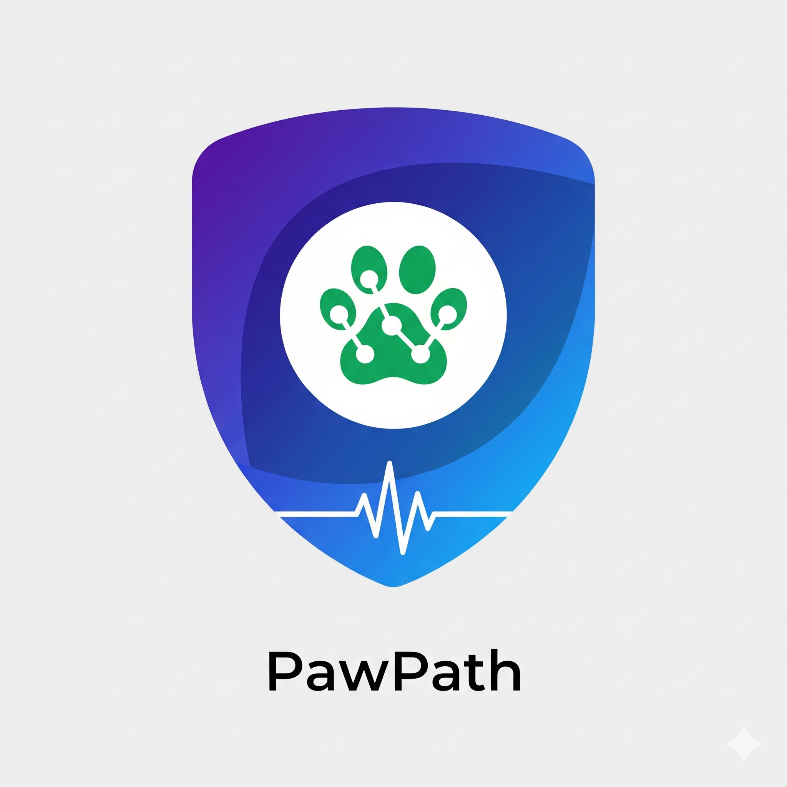

Bienvenido a PawPath
La plataforma integral para el cuidado y rescate de mascotas

Foro de Rescate
Reporta mascotas perdidas o encontradas. Sube fotos y ayuda a reunir familias.
Veterinarios Pro
Expedientes digitales, recetas electrónicas y agenda inteligente.
Caridad Gratuita
Reportes de extravíos y ayuda callejera siempre gratuitos.
Últimas Publicaciones en el Foro
Planes de Suscripción
Nivel Base
Gratis
- ✅ 1 Mascota registrada
- ✅ Acceso al foro
- ✅ Alertas básicas
Nivel Plus
$5/mes por mascota
- ✅ 2 Mascotas
- ✅ Expediente digital
- ✅ Chat con veterinarios
Nivel Multi
$12/mes familiar
- ✅ 3+ Mascotas
- ✅ Recetas electrónicas
- ✅ Agenda premium